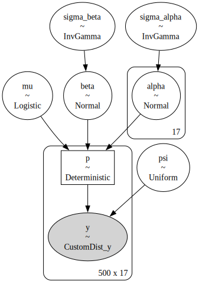
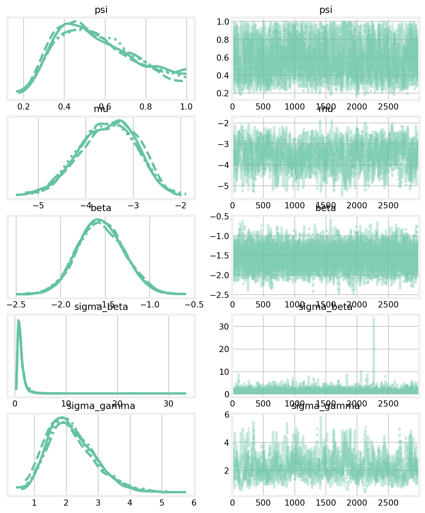
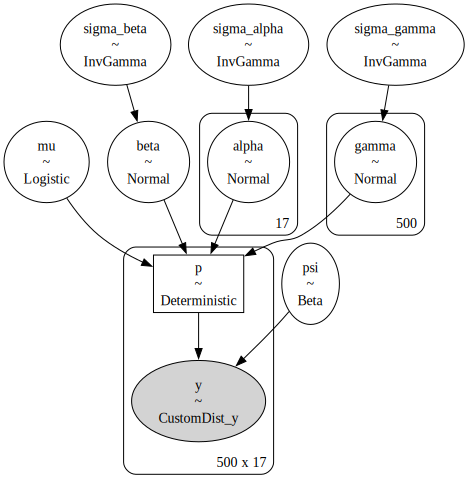
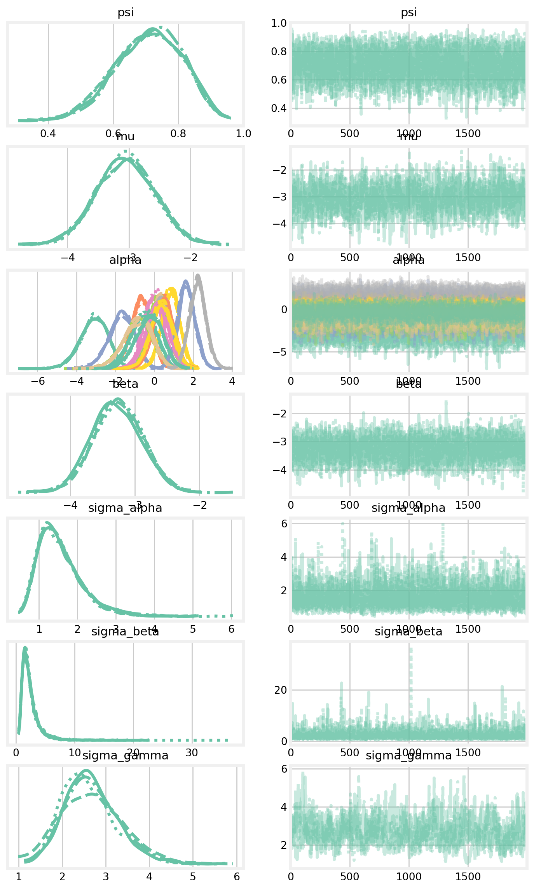
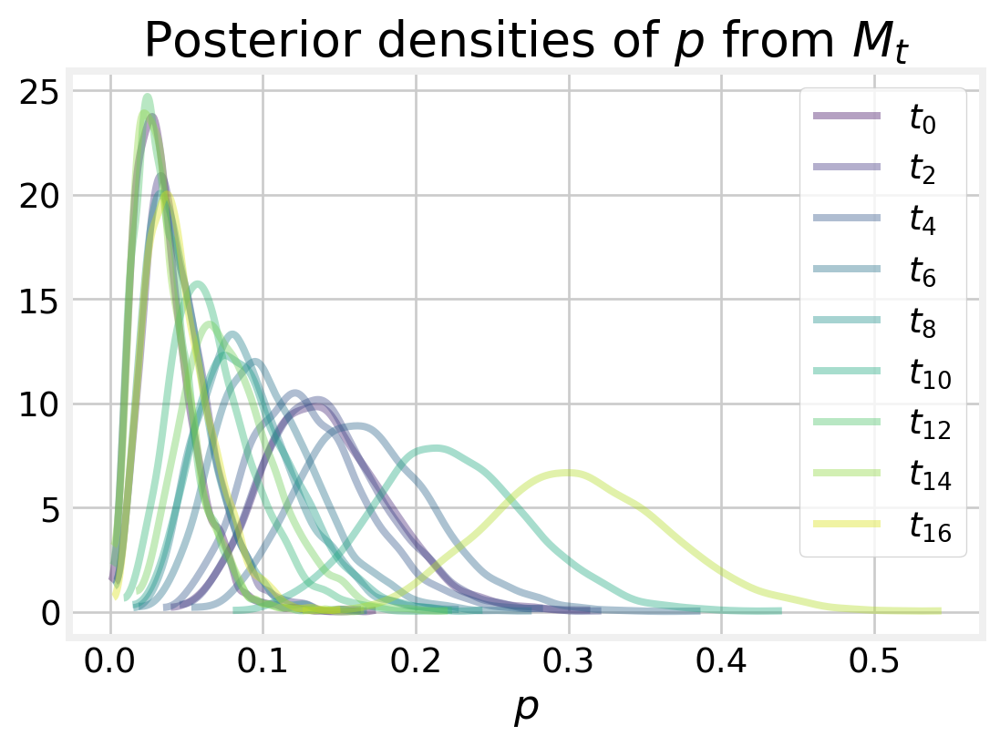

# libraries
import numpy as np
import pandas as pd
import pymc as pm
import arviz as az
import matplotlib.pyplot as plt
import seaborn as sns
from pymc.distributions.dist_math import binomln, logpow
plt.style.use('fivethirtyeight')
plt.rcParams['axes.facecolor'] = 'white'
plt.rcParams['figure.facecolor'] = 'white'
pal = sns.color_palette("Set2")
sns.set_palette(pal)
# hyperparameters
SEED = 808
RNG = np.random.default_rng(SEED)
def augment_history(history):
'''Augment a capture history with all-zero histories.'''
animals_captured, T = history.shape
# create M - n all zero histories
zero_history_count = M - animals_captured
zero_history = np.zeros((zero_history_count, T))
# tack those on to the capture history
augmented = np.row_stack((history, zero_history))
return augmented
def get_behavior_covariate(history):
# note the occasion when each individual was first seen
first_seen = (history != 0).argmax(axis=1)
# create the covariate for the behavior effect
behavior_covariate = np.zeros_like(history)
for i, f in enumerate(first_seen):
behavior_covariate[i, (f + 1):] = 1
return behavior_covariate
def get_occasion_covariate(history):
_, T = history.shape
l = []
for t in range(T):
oc = np.zeros_like(history)
oc[:, t] = 1
l.append(oc)
return np.stack(l, axis=2)
def sim_N(idata):
psi_samps = az.extract(idata).psi.values
p_samps = az.extract(idata).p.values
not_p = (1 - p_samps)
if p_samps.ndim == 1:
p_included = psi_samps * (not_p) ** T
number_undetected = RNG.binomial(M - n, p_included)
elif p_samps.ndim == 3:
p_included = psi_samps * not_p.prod(axis=1)
number_undetected = RNG.binomial(1, p_included).sum(axis=0)
N = n + number_undetected
return N
# convert the dolphin capture history from '1001001' to array
dolphin = np.loadtxt('firth.txt', dtype=str)
dolphin = np.array([list(map(int, d)) for d in dolphin])
# augment the capture history with all zero histories
n, T = dolphin.shape
M = 500
dolphin_augmented = augment_history(dolphin)
# covariates for t and b
occasion_covariate = get_occasion_covariate(dolphin_augmented)
behavior_covariate = get_behavior_covariate(dolphin_augmented)Model comparison
Comparing closed capture-recapture models in PyMC
In this notebook, I demonstrate an approach to model selection in PyMC. To do so, follow the lead of King and Brooks (2008), although not nearly as elegantly. They demonstrate an approach to model selection for a typical suite of closed capture-recapture models. These include the effects of behavior \(b\), time \(t,\) and individual heterogeneity \(h\) on capture probabilities \(p\). The eight models considered here are combinations of the three: \(M_{0},\) \(M_{t},\) \(M_{b},\) \(M_{tb},\) \(M_{h},\) \(M_{th},\) \(M_{bh}\). The full model, \(M_{tbh}\), is
\[
\begin{equation}
\text{logit} \; p_{it} = \mu + \alpha_t + \beta x_{it} + \gamma_i,
\end{equation}
\] where \(\mu\) is the average catchability, \(\alpha_t\) is the effect of each occasion on catchability, \(\beta\) is the behavioral effect, \(x_{it}\) indicates whether the individual has been previously caught, and \(\gamma_i\) is the individual random effect such that \(\gamma_i \sim \text{Normal}(0,\sigma)\). Formulating the model this way makes the other models nested subsets of the full model.
Like King and Brooks (2008), I use the the Moray Firth bottlenose dolphin data as a motivating example. Wilson, Hammond, and Thompson (1999) detected \(n=56\) dolphins over the course of \(T=17\) boat surveys between May and September 1992. They generated the capture-recapture histories by way of photo-identification, which is near and dear to my heart (and my dissertation).
The discovery curve, the number of unique dolphins encountered as a function of the total number of dolphins encountered, may be flattening. This suggests that, at this point in the study, Wilson, Hammond, and Thompson (1999) may have encountered many of the unique individuals in the population.
# how many dolphins have been seen?
total_seen = dolphin.sum(axis=0).cumsum()
# how many new dolphins have been seen?
first_seen = (dolphin != 0).argmax(axis=1)
newbies = [sum(first_seen == t) for t in range(T)]
total_newbies = np.cumsum(newbies)
fig, ax = plt.subplots(figsize=(5, 3.5))
ax.plot(total_seen, total_newbies)
ax.fill_between(total_seen, total_newbies, alpha=0.2)
ax.set_title('Discovery curve')
ax.set_xlabel('Total dolphins')
ax.set_ylabel('Unique dolphins')
plt.show()Training each model
This notebook looks messier than the others, in that I train several models with little commentary along the way. In practice, it would probably be better to wrap these up into a function or a class. To complete the model, I used the following priors, \[
\begin{align}
\psi &\sim \text{Uniform}(0, 1)\\
\mu &\sim \text{Logistic}(0, 1) \\
\alpha_t &\sim \text{Normal}(0, \sigma_{\alpha}) \\
\beta &\sim \text{Normal}(0, \sigma_{\beta}) \\
\gamma_i &\sim \text{Normal}(0, \sigma_{\gamma}) \\
\sigma_{\alpha} &\sim \text{InverseGamma}(4, 3) \\
\sigma_{\beta} &\sim \text{InverseGamma}(4, 3) \\
\sigma_{\gamma} &\sim \text{InverseGamma}(4, 3),
\end{align}
\] which were also used by King and Brooks (2008). Although note that I used an informative \(\text{Beta}(1, 5)\) prior for \(\psi\) in the full model (see below). I use the same logp seen in the occupancy and closed capture-recapture notebooks, which accounts for row-level zero-inflation. Unlike other notebooks, I did not look at the summaries or the trace plots unless the sampler indicated that it had issues during training.
def logp(value, n, p, psi):
binom = binomln(n, value) + logpow(p, value) + logpow(1 - p, n - value)
bin_sum = pm.math.sum(binom, axis=1)
bin_exp = pm.math.exp(bin_sum)
res = pm.math.switch(
value.sum(axis=1) > 0,
bin_exp * psi,
bin_exp * psi + (1 - psi)
)
return pm.math.log(res)with pm.Model() as m0:
# Priors
# inclusion
psi = pm.Uniform('psi', 0, 1)
# mean catchability
mu = pm.Logistic('mu', 0, 1)
# Linear model
mu_matrix = (np.ones((T, M)) * mu).T
p = pm.Deterministic('p', pm.math.invlogit(mu_matrix))
# Likelihood
pm.CustomDist(
'y',
1,
p,
psi,
logp=logp,
observed=dolphin_augmented
)
pm.model_to_graphviz(m0)
with m0:
m0_idata = pm.sample()Auto-assigning NUTS sampler...
Initializing NUTS using jitter+adapt_diag...
Multiprocess sampling (4 chains in 4 jobs)
NUTS: [psi, mu]
Sampling 4 chains for 1_000 tune and 1_000 draw iterations (4_000 + 4_000 draws total) took 2 seconds.
100.00% [8000/8000 00:02<00:00 Sampling 4 chains, 0 divergences]
with pm.Model() as mt:
# Priors
# inclusion
psi = pm.Uniform('psi', 0, 1)
# mean catchability
mu = pm.Logistic('mu', 0, 1)
# time effect
sigma_alpha = pm.InverseGamma('sigma_alpha', 4, 3)
alpha = pm.Normal('alpha', 0, tau=1/sigma_alpha, shape=T)
# Linear model
nu = mu + pm.math.dot(occasion_covariate, alpha)
p = pm.Deterministic('p', pm.math.invlogit(nu))
# Likelihood
pm.CustomDist(
'y',
1,
p,
psi,
logp=logp,
observed=dolphin_augmented
)
pm.model_to_graphviz(mt)
with mt:
mt_idata = pm.sample()Auto-assigning NUTS sampler...
Initializing NUTS using jitter+adapt_diag...
Multiprocess sampling (4 chains in 4 jobs)
NUTS: [psi, mu, sigma_alpha, alpha]
Sampling 4 chains for 1_000 tune and 1_000 draw iterations (4_000 + 4_000 draws total) took 28 seconds.
100.00% [8000/8000 00:27<00:00 Sampling 4 chains, 0 divergences]
with pm.Model() as mb:
# Priors
# inclusion
psi = pm.Uniform('psi', 0, 1)
# mean catchability
mu = pm.Logistic('mu', 0, 1)
# behavior effect
sigma_beta = pm.InverseGamma('sigma_beta', 4, 3)
beta = pm.Normal('beta', 0, tau=1/sigma_beta)
# Linear model
nu = mu + behavior_covariate * beta
p = pm.Deterministic('p', pm.math.invlogit(nu))
# Likelihood
pm.CustomDist(
'y',
1,
p,
psi,
logp=logp,
observed=dolphin_augmented
)
pm.model_to_graphviz(mb)
with mb:
mb_idata = pm.sample()Auto-assigning NUTS sampler...
Initializing NUTS using jitter+adapt_diag...
Multiprocess sampling (4 chains in 4 jobs)
NUTS: [psi, mu, sigma_beta, beta]
Sampling 4 chains for 1_000 tune and 1_000 draw iterations (4_000 + 4_000 draws total) took 13 seconds.
100.00% [8000/8000 00:12<00:00 Sampling 4 chains, 0 divergences]
with pm.Model() as mtb:
# Priors
# inclusion
psi = pm.Uniform('psi', 0, 1)
# mean catchability
mu = pm.Logistic('mu', 0, 1)
# time effect
sigma_alpha = pm.InverseGamma('sigma_alpha', 4, 3)
alpha = pm.Normal('alpha', 0, tau=1/sigma_alpha, shape=T)
# behavior effect
sigma_beta = pm.InverseGamma('sigma_beta', 4, 3)
beta = pm.Normal('beta', 0, tau=1/sigma_beta)
# Linear model
nu = mu + pm.math.dot(occasion_covariate, alpha) + behavior_covariate * beta
p = pm.Deterministic('p', pm.math.invlogit(nu))
# Likelihood
pm.CustomDist(
'y',
1,
p,
psi,
logp=logp,
observed=dolphin_augmented
)
pm.model_to_graphviz(mtb)

with mtb:
mtb_idata = pm.sample()Auto-assigning NUTS sampler...
Initializing NUTS using jitter+adapt_diag...
Multiprocess sampling (4 chains in 4 jobs)
NUTS: [psi, mu, sigma_alpha, alpha, sigma_beta, beta]
Sampling 4 chains for 1_000 tune and 1_000 draw iterations (4_000 + 4_000 draws total) took 37 seconds.
100.00% [8000/8000 00:36<00:00 Sampling 4 chains, 0 divergences]
with pm.Model() as mh:
# Priors
# inclusion
psi = pm.Uniform('psi', 0, 1)
# mean catchability
mu = pm.Logistic('mu', 0, 1)
# individual effect
sigma_gamma = pm.InverseGamma('sigma_gamma', 4, 3)
gamma = pm.Normal('gamma', 0, tau=1/sigma_gamma, shape=M)
# Linear model
individual_effect = (np.ones((T, M)) * gamma).T
nu = mu + individual_effect
p = pm.Deterministic('p', pm.math.invlogit(nu))
# Likelihood
pm.CustomDist(
'y',
1,
p,
psi,
logp=logp,
observed=dolphin_augmented
)
pm.model_to_graphviz(mh)
with mh:
mh_idata = pm.sample(3000, target_accept=0.99)Auto-assigning NUTS sampler...
Initializing NUTS using jitter+adapt_diag...
Multiprocess sampling (4 chains in 4 jobs)
NUTS: [psi, mu, sigma_gamma, gamma]
Sampling 4 chains for 1_000 tune and 3_000 draw iterations (4_000 + 12_000 draws total) took 92 seconds.
The rhat statistic is larger than 1.01 for some parameters. This indicates problems during sampling. See https://arxiv.org/abs/1903.08008 for details
The effective sample size per chain is smaller than 100 for some parameters. A higher number is needed for reliable rhat and ess computation. See https://arxiv.org/abs/1903.08008 for details
100.00% [16000/16000 01:32<00:00 Sampling 4 chains, 0 divergences]
az.summary(mh_idata, var_names=['psi', 'mu', 'sigma_gamma'])| mean | sd | hdi_3% | hdi_97% | mcse_mean | mcse_sd | ess_bulk | ess_tail | r_hat | |
|---|---|---|---|---|---|---|---|---|---|
| psi | 0.184 | 0.038 | 0.122 | 0.253 | 0.002 | 0.001 | 608.0 | 1078.0 | 1.01 |
| mu | -2.784 | 0.323 | -3.377 | -2.216 | 0.017 | 0.012 | 390.0 | 706.0 | 1.02 |
| sigma_gamma | 0.777 | 0.336 | 0.295 | 1.396 | 0.022 | 0.016 | 215.0 | 468.0 | 1.03 |
az.plot_trace(mh_idata, figsize=(8, 6), var_names=['psi', 'mu', 'sigma_gamma']);
with pm.Model() as mth:
# Priors
# inclusion
psi = pm.Beta('psi', 1, 1)
# mean catchability
mu = pm.Logistic('mu', 0, 1)
# time effect
sigma_alpha = pm.InverseGamma('sigma_alpha', 4, 3)
alpha = pm.Normal('alpha', 0, tau=1/sigma_alpha, shape=T)
# individual effect
sigma_gamma = pm.InverseGamma('sigma_gamma', 4, 3)
gamma = pm.Normal('gamma', 0, tau=1/sigma_gamma, shape=M)
# Linear model
individual_effect = (np.ones((T, M)) * gamma).T
nu = mu + pm.math.dot(occasion_covariate, alpha) + individual_effect
p = pm.Deterministic('p', pm.math.invlogit(nu))
# Likelihood
pm.CustomDist(
'y',
1,
p,
psi,
logp=logp,
observed=dolphin_augmented
)
pm.model_to_graphviz(mth)
with mth:
mth_idata = pm.sample(draws=3000, target_accept=0.95)Auto-assigning NUTS sampler...
Initializing NUTS using jitter+adapt_diag...
Multiprocess sampling (4 chains in 4 jobs)
NUTS: [psi, mu, sigma_alpha, alpha, sigma_gamma, gamma]
Sampling 4 chains for 1_000 tune and 3_000 draw iterations (4_000 + 12_000 draws total) took 213 seconds.
The rhat statistic is larger than 1.01 for some parameters. This indicates problems during sampling. See https://arxiv.org/abs/1903.08008 for details
The effective sample size per chain is smaller than 100 for some parameters. A higher number is needed for reliable rhat and ess computation. See https://arxiv.org/abs/1903.08008 for details
100.00% [16000/16000 03:32<00:00 Sampling 4 chains, 0 divergences]
az.summary(mth_idata, var_names=['psi', 'mu', 'sigma_alpha', 'sigma_gamma', 'alpha'])| mean | sd | hdi_3% | hdi_97% | mcse_mean | mcse_sd | ess_bulk | ess_tail | r_hat | |
|---|---|---|---|---|---|---|---|---|---|
| psi | 0.177 | 0.035 | 0.118 | 0.238 | 0.001 | 0.001 | 700.0 | 983.0 | 1.00 |
| mu | -3.006 | 0.401 | -3.775 | -2.289 | 0.017 | 0.012 | 575.0 | 900.0 | 1.01 |
| sigma_alpha | 0.923 | 0.358 | 0.375 | 1.565 | 0.004 | 0.003 | 9159.0 | 7416.0 | 1.00 |
| sigma_gamma | 0.822 | 0.357 | 0.312 | 1.452 | 0.023 | 0.016 | 241.0 | 464.0 | 1.01 |
| alpha[0] | -1.107 | 0.617 | -2.330 | -0.006 | 0.006 | 0.005 | 11171.0 | 7188.0 | 1.00 |
| alpha[1] | 0.563 | 0.414 | -0.206 | 1.354 | 0.005 | 0.004 | 6862.0 | 6647.0 | 1.00 |
| alpha[2] | -0.807 | 0.557 | -1.889 | 0.177 | 0.005 | 0.005 | 10878.0 | 8036.0 | 1.00 |
| alpha[3] | 0.563 | 0.407 | -0.210 | 1.331 | 0.005 | 0.003 | 7144.0 | 7485.0 | 1.00 |
| alpha[4] | 0.449 | 0.415 | -0.339 | 1.221 | 0.005 | 0.004 | 7572.0 | 7528.0 | 1.00 |
| alpha[5] | 0.780 | 0.401 | 0.054 | 1.571 | 0.005 | 0.004 | 6376.0 | 7094.0 | 1.00 |
| alpha[6] | 0.177 | 0.444 | -0.662 | 1.015 | 0.005 | 0.004 | 7483.0 | 7897.0 | 1.00 |
| alpha[7] | 0.026 | 0.451 | -0.830 | 0.866 | 0.005 | 0.004 | 8610.0 | 7551.0 | 1.00 |
| alpha[8] | -0.803 | 0.562 | -1.839 | 0.254 | 0.006 | 0.005 | 10471.0 | 7051.0 | 1.00 |
| alpha[9] | 0.027 | 0.455 | -0.847 | 0.858 | 0.005 | 0.004 | 8828.0 | 8326.0 | 1.00 |
| alpha[10] | 1.151 | 0.382 | 0.441 | 1.884 | 0.005 | 0.004 | 5996.0 | 6314.0 | 1.00 |
| alpha[11] | -0.335 | 0.496 | -1.274 | 0.593 | 0.005 | 0.005 | 8981.0 | 7564.0 | 1.00 |
| alpha[12] | -1.106 | 0.598 | -2.217 | 0.008 | 0.005 | 0.004 | 12939.0 | 8242.0 | 1.00 |
| alpha[13] | -0.151 | 0.477 | -1.018 | 0.763 | 0.005 | 0.004 | 7860.0 | 6848.0 | 1.00 |
| alpha[14] | -1.107 | 0.612 | -2.290 | -0.007 | 0.006 | 0.005 | 12375.0 | 8210.0 | 1.00 |
| alpha[15] | 1.604 | 0.363 | 0.920 | 2.279 | 0.005 | 0.003 | 5734.0 | 7286.0 | 1.00 |
| alpha[16] | -0.805 | 0.564 | -1.852 | 0.234 | 0.005 | 0.004 | 12198.0 | 7592.0 | 1.00 |
az.plot_trace(mth_idata, figsize=(8, 10),
var_names=['psi', 'mu', 'sigma_alpha', 'sigma_gamma', 'alpha']);with pm.Model() as mbh:
# Priors
# inclusion
psi = pm.Beta('psi', 1, 1)
# mean catchability
mu = pm.Logistic('mu', 0, 1)
# behavior effect
sigma_beta = pm.InverseGamma('sigma_beta', 4, 3)
beta = pm.Normal('beta', 0, tau=1/sigma_beta)
# individual effect
sigma_gamma = pm.InverseGamma('sigma_gamma', 4, 3)
gamma = pm.Normal('gamma', 0, tau=1/sigma_gamma, shape=M)
# Linear model
individual_effect = (np.ones((T, M)) * gamma).T
nu = mu + behavior_covariate * beta + individual_effect
p = pm.Deterministic('p', pm.math.invlogit(nu))
# Likelihood
pm.CustomDist(
'y',
1,
p,
psi,
logp=logp,
observed=dolphin_augmented
)
pm.model_to_graphviz(mbh)
with mbh:
mbh_idata = pm.sample(draws=3000, target_accept=0.95)Auto-assigning NUTS sampler...
Initializing NUTS using jitter+adapt_diag...
Multiprocess sampling (4 chains in 4 jobs)
NUTS: [psi, mu, sigma_beta, beta, sigma_gamma, gamma]
Sampling 4 chains for 1_000 tune and 3_000 draw iterations (4_000 + 12_000 draws total) took 359 seconds.
The effective sample size per chain is smaller than 100 for some parameters. A higher number is needed for reliable rhat and ess computation. See https://arxiv.org/abs/1903.08008 for details
100.00% [16000/16000 05:59<00:00 Sampling 4 chains, 0 divergences]
az.summary(mbh_idata, var_names=['psi', 'mu', 'beta', 'sigma_gamma'])| mean | sd | hdi_3% | hdi_97% | mcse_mean | mcse_sd | ess_bulk | ess_tail | r_hat | |
|---|---|---|---|---|---|---|---|---|---|
| psi | 0.551 | 0.190 | 0.251 | 0.925 | 0.010 | 0.007 | 385.0 | 1566.0 | 1.00 |
| mu | -3.491 | 0.586 | -4.582 | -2.452 | 0.035 | 0.025 | 285.0 | 694.0 | 1.00 |
| beta | -1.538 | 0.259 | -2.013 | -1.037 | 0.006 | 0.004 | 2013.0 | 4830.0 | 1.00 |
| sigma_gamma | 2.117 | 0.772 | 0.843 | 3.505 | 0.050 | 0.035 | 233.0 | 572.0 | 1.01 |
az.plot_trace(mbh_idata, figsize=(8, 10),
var_names=['psi', 'mu', 'beta', 'sigma_beta', 'sigma_gamma']);
with pm.Model() as mtbh:
# Priors
# inclusion
psi = pm.Beta('psi', 1, 5)
# mean catchability
mu = pm.Logistic('mu', 0, 1)
# time effect
sigma_alpha = pm.InverseGamma('sigma_alpha', 4, 3)
alpha = pm.Normal('alpha', 0, tau=1/sigma_alpha, shape=T)
# behavior effect
sigma_beta = pm.InverseGamma('sigma_beta', 4, 3)
beta = pm.Normal('beta', 0, tau=1/sigma_beta)
# individual effect
sigma_gamma = pm.InverseGamma('sigma_gamma', 4, 3)
gamma = pm.Normal('gamma', 0, tau=1/sigma_gamma, shape=M)
# Linear model
individual_effect = (np.ones((T, M)) * gamma).T
nu = mu + pm.math.dot(occasion_covariate, alpha) + behavior_covariate * beta + individual_effect
p = pm.Deterministic('p', pm.math.invlogit(nu))
# Likelihood
pm.CustomDist(
'y',
1,
p,
psi,
logp=logp,
observed=dolphin_augmented
)
pm.model_to_graphviz(mtbh)

with mtbh:
mtbh_idata = pm.sample(draws=2000)Auto-assigning NUTS sampler...
Initializing NUTS using jitter+adapt_diag...
Multiprocess sampling (4 chains in 4 jobs)
NUTS: [psi, mu, sigma_alpha, alpha, sigma_beta, beta, sigma_gamma, gamma]
Sampling 4 chains for 1_000 tune and 2_000 draw iterations (4_000 + 8_000 draws total) took 90 seconds.
The effective sample size per chain is smaller than 100 for some parameters. A higher number is needed for reliable rhat and ess computation. See https://arxiv.org/abs/1903.08008 for details
100.00% [12000/12000 01:30<00:00 Sampling 4 chains, 0 divergences]
az.summary(mtbh_idata,
var_names=['psi', 'mu', 'alpha', 'beta', 'sigma_alpha', 'sigma_beta', 'sigma_gamma'])| mean | sd | hdi_3% | hdi_97% | mcse_mean | mcse_sd | ess_bulk | ess_tail | r_hat | |
|---|---|---|---|---|---|---|---|---|---|
| psi | 0.713 | 0.102 | 0.522 | 0.898 | 0.002 | 0.001 | 3048.0 | 4771.0 | 1.0 |
| mu | -3.100 | 0.466 | -4.020 | -2.262 | 0.015 | 0.010 | 997.0 | 2002.0 | 1.0 |
| alpha[0] | -3.116 | 0.699 | -4.435 | -1.844 | 0.011 | 0.008 | 3818.0 | 4897.0 | 1.0 |
| alpha[1] | -0.670 | 0.509 | -1.608 | 0.297 | 0.010 | 0.007 | 2799.0 | 3931.0 | 1.0 |
| alpha[2] | -1.697 | 0.659 | -2.967 | -0.501 | 0.010 | 0.008 | 4092.0 | 4887.0 | 1.0 |
| alpha[3] | -0.053 | 0.488 | -0.969 | 0.871 | 0.009 | 0.006 | 3164.0 | 4502.0 | 1.0 |
| alpha[4] | 0.214 | 0.481 | -0.677 | 1.126 | 0.008 | 0.006 | 3506.0 | 4991.0 | 1.0 |
| alpha[5] | 0.835 | 0.451 | -0.030 | 1.653 | 0.008 | 0.006 | 3053.0 | 4420.0 | 1.0 |
| alpha[6] | 0.381 | 0.499 | -0.537 | 1.307 | 0.008 | 0.005 | 4143.0 | 4921.0 | 1.0 |
| alpha[7] | 0.380 | 0.509 | -0.627 | 1.289 | 0.008 | 0.006 | 3847.0 | 4482.0 | 1.0 |
| alpha[8] | -0.553 | 0.661 | -1.814 | 0.665 | 0.009 | 0.007 | 5914.0 | 4893.0 | 1.0 |
| alpha[9] | 0.465 | 0.528 | -0.536 | 1.436 | 0.008 | 0.006 | 4120.0 | 4516.0 | 1.0 |
| alpha[10] | 1.666 | 0.432 | 0.837 | 2.459 | 0.008 | 0.006 | 2646.0 | 4381.0 | 1.0 |
| alpha[11] | 0.138 | 0.562 | -0.936 | 1.181 | 0.008 | 0.006 | 5079.0 | 5170.0 | 1.0 |
| alpha[12] | -0.898 | 0.752 | -2.312 | 0.477 | 0.010 | 0.008 | 6392.0 | 5209.0 | 1.0 |
| alpha[13] | 0.389 | 0.542 | -0.638 | 1.390 | 0.008 | 0.006 | 4114.0 | 5409.0 | 1.0 |
| alpha[14] | -0.868 | 0.746 | -2.272 | 0.493 | 0.009 | 0.008 | 7017.0 | 5038.0 | 1.0 |
| alpha[15] | 2.242 | 0.417 | 1.457 | 3.003 | 0.008 | 0.006 | 2503.0 | 4622.0 | 1.0 |
| alpha[16] | -0.257 | 0.686 | -1.512 | 1.030 | 0.009 | 0.008 | 6241.0 | 5109.0 | 1.0 |
| beta | -3.283 | 0.388 | -4.001 | -2.549 | 0.007 | 0.005 | 2715.0 | 4782.0 | 1.0 |
| sigma_alpha | 1.555 | 0.597 | 0.676 | 2.669 | 0.009 | 0.007 | 4883.0 | 5056.0 | 1.0 |
| sigma_beta | 2.381 | 1.502 | 0.610 | 4.921 | 0.020 | 0.015 | 8249.0 | 5157.0 | 1.0 |
| sigma_gamma | 2.779 | 0.650 | 1.681 | 4.051 | 0.033 | 0.023 | 383.0 | 839.0 | 1.0 |
az.plot_trace(mtbh_idata, figsize=(8,14),
var_names=['psi', 'mu', 'alpha', 'beta', 'sigma_alpha', 'sigma_beta', 'sigma_gamma']);

The trace plots and summary statistics show convergence issues for many of the individual heterogeneity models. The variance parameter, \(\sigma_{\gamma},\) seems to sample poorly. Further, models with both behavioral and individual effects lead to extremely large estimates of \(\psi\). This appears to happen regardless of the size of the data augmentation \(M.\)
Note that I upped the target_accept value for some models. This slows the sampler, but lowers the risk of divergence.
Model comparison
Next, I select a model for inference using an approximation of leave-one-out (loo) cross-validation (Vehtari, Gelman, and Gabry 2017). This approximation can be calculated using PyMC. To do so, I calculate the log-likelihood for each model, which is added to the InferenceData object. This makes it possible to compare the models using loo and az.compare.
with m0:
pm.compute_log_likelihood(m0_idata)
with mt:
pm.compute_log_likelihood(mt_idata)
with mb:
pm.compute_log_likelihood(mb_idata)
with mtb:
pm.compute_log_likelihood(mtb_idata)
with mh:
pm.compute_log_likelihood(mh_idata)
with mth:
pm.compute_log_likelihood(mth_idata)
with mbh:
pm.compute_log_likelihood(mbh_idata)
with mtbh:
pm.compute_log_likelihood(mtbh_idata)
100.00% [4000/4000 00:00<00:00]
100.00% [4000/4000 00:01<00:00]
100.00% [4000/4000 00:01<00:00]
100.00% [4000/4000 00:01<00:00]
100.00% [12000/12000 00:00<00:00]
100.00% [12000/12000 00:04<00:00]
100.00% [12000/12000 00:03<00:00]
100.00% [8000/8000 00:03<00:00]
model_dict = {"m0": m0_idata, "mt": mt_idata, "mb": mb_idata,
"mtb": mtb_idata, "mh": mh_idata, "mth": mth_idata,
"mbh": mbh_idata, "mtbh": mtbh_idata}
comparison = az.compare(model_dict)/Users/philtpatton/miniforge3/envs/pymc/lib/python3.11/site-packages/arviz/stats/stats.py:805: UserWarning: Estimated shape parameter of Pareto distribution is greater than 0.7 for one or more samples. You should consider using a more robust model, this is because importance sampling is less likely to work well if the marginal posterior and LOO posterior are very different. This is more likely to happen with a non-robust model and highly influential observations.
warnings.warn(
/Users/philtpatton/miniforge3/envs/pymc/lib/python3.11/site-packages/arviz/stats/stats.py:805: UserWarning: Estimated shape parameter of Pareto distribution is greater than 0.7 for one or more samples. You should consider using a more robust model, this is because importance sampling is less likely to work well if the marginal posterior and LOO posterior are very different. This is more likely to happen with a non-robust model and highly influential observations.
warnings.warn(
/Users/philtpatton/miniforge3/envs/pymc/lib/python3.11/site-packages/arviz/stats/stats.py:805: UserWarning: Estimated shape parameter of Pareto distribution is greater than 0.7 for one or more samples. You should consider using a more robust model, this is because importance sampling is less likely to work well if the marginal posterior and LOO posterior are very different. This is more likely to happen with a non-robust model and highly influential observations.
warnings.warn(
/Users/philtpatton/miniforge3/envs/pymc/lib/python3.11/site-packages/arviz/stats/stats.py:805: UserWarning: Estimated shape parameter of Pareto distribution is greater than 0.7 for one or more samples. You should consider using a more robust model, this is because importance sampling is less likely to work well if the marginal posterior and LOO posterior are very different. This is more likely to happen with a non-robust model and highly influential observations.
warnings.warn(
/Users/philtpatton/miniforge3/envs/pymc/lib/python3.11/site-packages/arviz/stats/stats.py:805: UserWarning: Estimated shape parameter of Pareto distribution is greater than 0.7 for one or more samples. You should consider using a more robust model, this is because importance sampling is less likely to work well if the marginal posterior and LOO posterior are very different. This is more likely to happen with a non-robust model and highly influential observations.
warnings.warn(
/Users/philtpatton/miniforge3/envs/pymc/lib/python3.11/site-packages/arviz/stats/stats.py:309: FutureWarning: Setting an item of incompatible dtype is deprecated and will raise an error in a future version of pandas. Value 'True' has dtype incompatible with float64, please explicitly cast to a compatible dtype first.
df_comp.loc[val] = (
/Users/philtpatton/miniforge3/envs/pymc/lib/python3.11/site-packages/arviz/stats/stats.py:309: FutureWarning: Setting an item of incompatible dtype is deprecated and will raise an error in a future version of pandas. Value 'log' has dtype incompatible with float64, please explicitly cast to a compatible dtype first.
df_comp.loc[val] = (The comparison tools notes issues with several of the models, suggesting a lack of robustness. Inspection of the comparison table shows that the struggling models all include the individual effect \(h.\) A more thorough analysis would consider reparameterizing the model, e.g., through the non-centered parameterization. In lieu of that, I simply discard the models that fail this test and re-do the comparison with the passing models.
comparison.round(2)| rank | elpd_loo | p_loo | elpd_diff | weight | se | dse | warning | scale | |
|---|---|---|---|---|---|---|---|---|---|
| mtbh | 0 | -430.62 | 87.06 | 0.00 | 0.97 | 57.18 | 0.00 | True | log |
| mth | 1 | -489.22 | 38.02 | 58.60 | 0.00 | 58.89 | 11.21 | True | log |
| mtb | 2 | -493.26 | 21.47 | 62.64 | 0.00 | 62.12 | 11.43 | True | log |
| mt | 3 | -493.92 | 14.34 | 63.30 | 0.00 | 59.54 | 12.50 | False | log |
| mbh | 4 | -495.19 | 68.06 | 64.57 | 0.00 | 60.82 | 11.47 | True | log |
| mh | 5 | -518.62 | 25.59 | 88.00 | 0.03 | 61.47 | 15.31 | True | log |
| mb | 6 | -521.53 | 5.45 | 90.91 | 0.00 | 63.17 | 15.28 | False | log |
| m0 | 7 | -522.55 | 2.50 | 91.93 | 0.00 | 62.10 | 16.12 | False | log |
good_dict = {"m0": m0_idata, "mt": mt_idata, "mb": mb_idata, "mtb": mtb_idata}
good_comparison = az.compare(good_dict)
good_comparison.round(2)/Users/philtpatton/miniforge3/envs/pymc/lib/python3.11/site-packages/arviz/stats/stats.py:805: UserWarning: Estimated shape parameter of Pareto distribution is greater than 0.7 for one or more samples. You should consider using a more robust model, this is because importance sampling is less likely to work well if the marginal posterior and LOO posterior are very different. This is more likely to happen with a non-robust model and highly influential observations.
warnings.warn(
/Users/philtpatton/miniforge3/envs/pymc/lib/python3.11/site-packages/arviz/stats/stats.py:309: FutureWarning: Setting an item of incompatible dtype is deprecated and will raise an error in a future version of pandas. Value 'True' has dtype incompatible with float64, please explicitly cast to a compatible dtype first.
df_comp.loc[val] = (
/Users/philtpatton/miniforge3/envs/pymc/lib/python3.11/site-packages/arviz/stats/stats.py:309: FutureWarning: Setting an item of incompatible dtype is deprecated and will raise an error in a future version of pandas. Value 'log' has dtype incompatible with float64, please explicitly cast to a compatible dtype first.
df_comp.loc[val] = (| rank | elpd_loo | p_loo | elpd_diff | weight | se | dse | warning | scale | |
|---|---|---|---|---|---|---|---|---|---|
| mtb | 0 | -493.26 | 21.47 | 0.00 | 0.61 | 62.12 | 0.00 | True | log |
| mt | 1 | -493.92 | 14.34 | 0.66 | 0.39 | 59.54 | 6.77 | False | log |
| mb | 2 | -521.53 | 5.45 | 28.28 | 0.00 | 63.17 | 8.61 | False | log |
| m0 | 3 | -522.55 | 2.50 | 29.29 | 0.00 | 62.10 | 10.41 | False | log |
az.plot_compare(good_comparison, figsize=(5, 4));/Users/philtpatton/miniforge3/envs/pymc/lib/python3.11/site-packages/arviz/plots/backends/matplotlib/compareplot.py:87: FutureWarning: Series.__getitem__ treating keys as positions is deprecated. In a future version, integer keys will always be treated as labels (consistent with DataFrame behavior). To access a value by position, use `ser.iloc[pos]`
scale = comp_df["scale"][0]
The comparison shows that all of the model weight belongs to two models: \(M_t\) and \(M_{tb}.\)
Model averaged predictions
Finally, we can use the model weights to simulate a weighted posterior of \(N.\) To do so, I take a weighted sample of each of the posteriors of \(N,\) with the weight dictated by the comparison tool.
posteriors = [sim_N(good_dict[model]) for model in good_dict]
weights = [good_comparison.loc[model].weight for model in good_dict]
sample_count = len(posteriors[0])
l = []
for w, p in zip(weights, posteriors):
weighted_sample = RNG.choice(p, size=int(w * sample_count))
l.append(weighted_sample)
weighted_posterior = np.concatenate(l)
fig, (ax0, ax1) = plt.subplots(2, 1, figsize=(7, 6), sharex=True, sharey=True, tight_layout=True)
pal = sns.color_palette("Set2")
# labs = [k for k in good_dict.keys()]
labs = [r'$M_{0}$', r'$M_{t}$', r'$M_{b}$', r'$M_{tb}$']
for i, p in enumerate(posteriors):
ax0.hist(p, color=pal[i], edgecolor='white', bins=60, alpha=0.6, label=labs[i])
ax0.set_title(r'Posteriors of $N$')
# ax1.set_title(r'Weighted posterior')
ax0.set_xlim((53, 150))
ax0.legend()
ax0.set_ylabel('Number of samples')
ax1.set_ylabel('Number of samples')
ax1.hist(weighted_posterior, edgecolor='white', bins=60, alpha=0.9, color=pal[6], label='Weighted')
ax1.legend()
plt.show()
We can also look at the posterior densities of \(p\) from Model \(M_t,\) the second most weighted model.
p_samps = az.extract(mt_idata).p.mean(axis=0)
fig, ax = plt.subplots(figsize=(6, 4))
a = 0.4
# ax[0].set_title("Poisson")
pal = sns.color_palette('viridis', T)
for t in range(T):
label_idx = t % 2
if label_idx == 0:
az.plot_dist(p_samps[t], ax=ax, color=pal[t], label=f'$t_{{{t}}}$',
plot_kwargs={'linewidth':3, 'alpha': a})
else:
az.plot_dist(p_samps[t], ax=ax, color=pal[t],
plot_kwargs={'linewidth':3, 'alpha': a})
ax.set_title(r'Posterior densities of $p$ from $M_t$')
ax.set_xlabel(r'$p$')
plt.show()

This notebook demonstrates a simple way to compare models using leave one out cross-validation (loo) and a classic example from capture-recapture. This is just one way, however, to perform model comparison using PyMC. Perhaps a more effective solution for this problem would be placing a shrinkage prior on the \(\sigma\) parameters.
References
King, Ruth, and SP2526632 Brooks. 2008. “On the Bayesian Estimation of a Closed Population Size in the Presence of Heterogeneity and Model Uncertainty.” Biometrics 64 (3): 816–24.
Vehtari, Aki, Andrew Gelman, and Jonah Gabry. 2017. “Practical Bayesian Model Evaluation Using Leave-One-Out Cross-Validation and WAIC.” Statistics and Computing 27: 1413–32.
Wilson, Ben, Philip S Hammond, and Paul M Thompson. 1999. “Estimating Size and Assessing Trends in a Coastal Bottlenose Dolphin Population.” Ecological Applications 9 (1): 288–300.